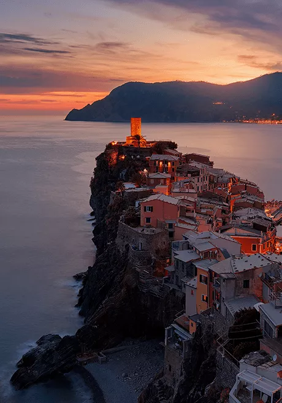
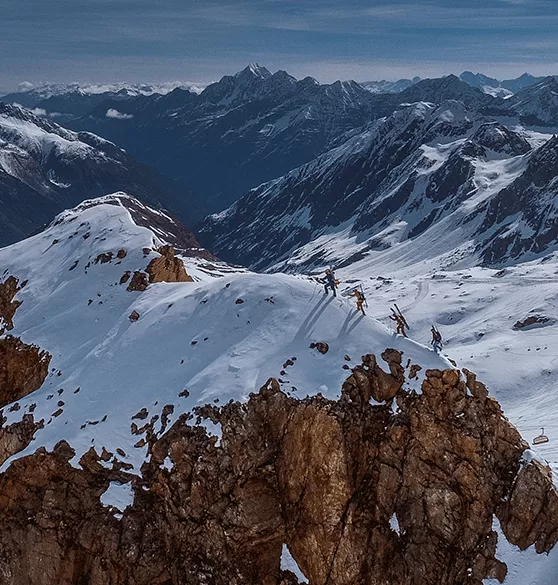
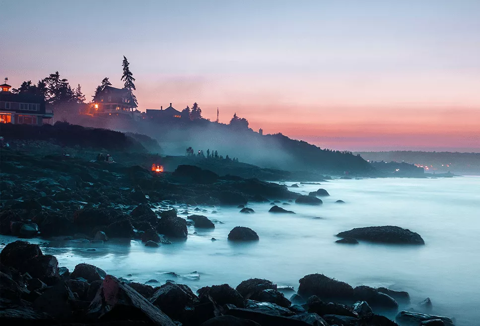
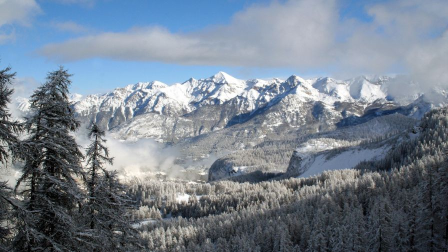
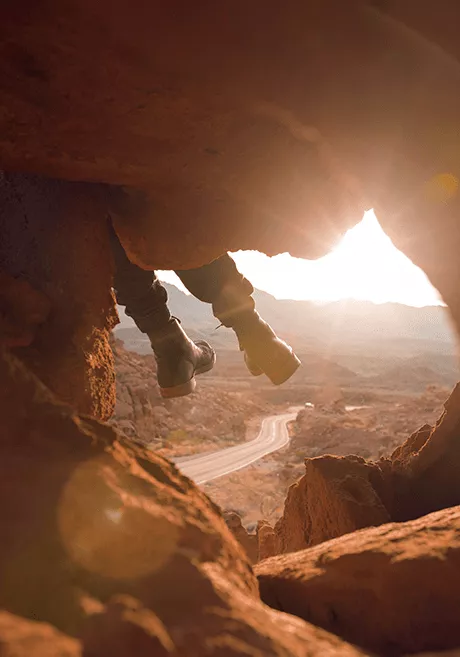
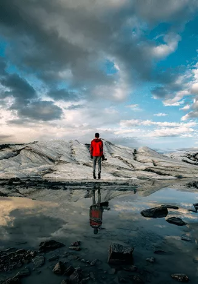

Autotortiesības © Visas tiesības paturētas | Šo mājaslapu veidoja Ričards Jeremičevs ģeogrāfijas projektam
"Visbīstamākais pasaules uzskats ir to cilvēku pasaules uzskats, kas nav redzējuši pasauli."
- Aleksandrs fon Humbolts

Klimats


Pļavas


Augsne


Ezers